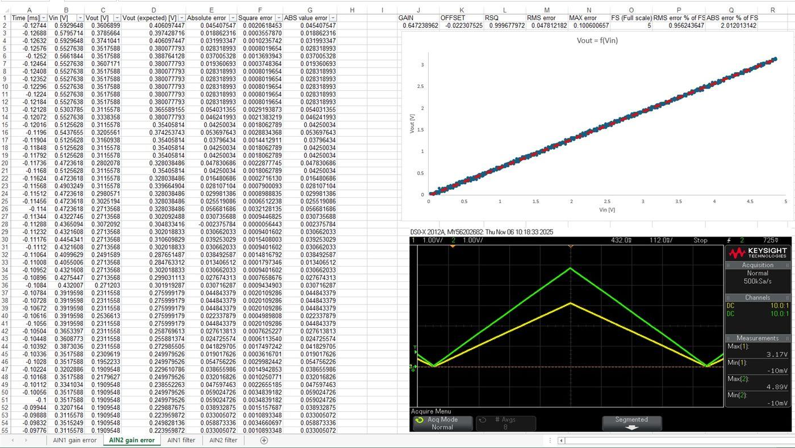
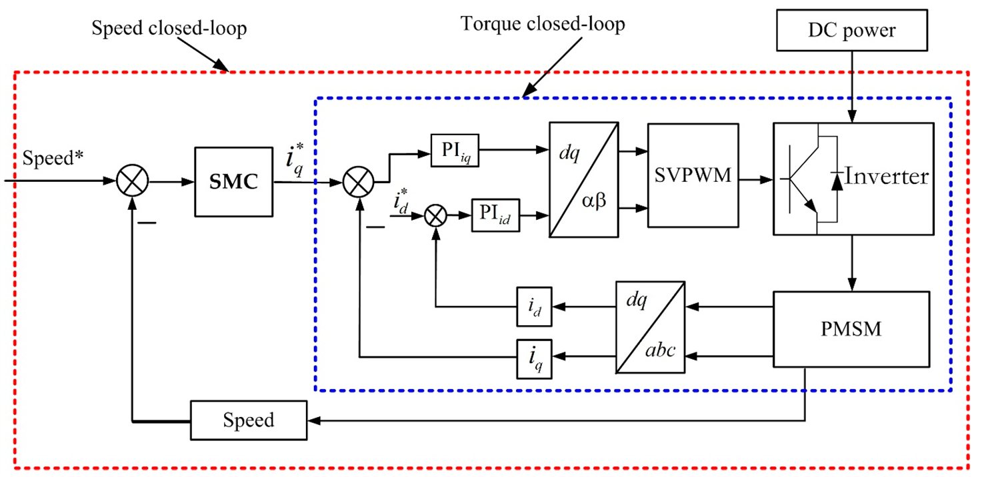

Project
Inverter MCU Module
STM32-based control board for the traction inverter, running a field-oriented control loop — Clarke-Park transforms, decoupling, and PI current control — to drive the motor. Characterized analog input channels for linearity and noise, and worked through a structured bring-up list across power supply, CAN, encoder, and gate driver interfaces.
Overview
The MCU module is the sensing and control board for the traction inverter, built to pair with the gate driver board and close the loop that board's open-loop PWM generation was missing: rotor position, phase current, DC-link voltage/current, and temperature. It is built around an STM32G474, and together with the gate driver interface it forms the hardware platform for a field-oriented control (FOC) motor drive.
Functionality
Rotor position — encoder and resolver
Two rotor-position sensing paths are supported. An incremental quadrature encoder (A/B/Z) is read directly by a timer peripheral configured in encoder mode, with its index (Z) pulse used to periodically re-sync the count. Because an incremental encoder gives no absolute position at start-up, the board also supports an absolute encoder read over a synchronous serial interface (SSI) on an RS-422 physical layer — the MCU acts as master, generating a clock and receiving the encoder's position reply — used once at boot to seed the incremental count with a correct absolute angle. A generic 5V resolver is also supported as a design requirement: the MCU generates a PWM excitation signal, low-pass filtered into a sine wave and amplified to drive the resolver primary, and reads back the Sine/Cosine outputs on dedicated ADC channels.
Phase current measurement
Phase current is measured with Hall-effect current sensors (LEM DHAB 118), each providing two analog outputs — a lower range up to ±30A and a higher range up to ±350A. Because software-based overcurrent detection is too slow for a short-circuit fault, protection is implemented in hardware: each sensor's output feeds a comparator against an MCU-driven DAC threshold, with both comparator outputs dioded together into a shared fault line that sets a latch wired directly into the PWM timer's hardware BREAK input — stopping PWM generation before the MCU's software ever has to react. The MCU can clear the latch once a fault is resolved.
DC-link measurement
DC-link voltage is measured through a voltage divider into an isolation amplifier, followed by a differential-to-single-ended stage, scaling the full-scale bus voltage down to the MCU's analog input range. DC-link current uses the same measurement path as phase current. Together these are used to normalize the space-vector modulation and to decide between MTPA and field-weakening operating regions.
Temperature measurement
Motor and power-module temperatures are each read through an NTC thermistor voltage divider. A separate board-mounted ambient temperature sensor is placed away from any heat-generating components, so a rise in ambient temperature specifically — as opposed to a local hotspot — can be distinguished and used to apply power de-rating or flag an imminent fault.
External communication and memory
A CAN interface is included as the standard EV/automotive protocol, used to report inverter status, measurements, and receive torque requests. A UART-over-USB interface is also provided, easier to bring up in early development and for general debugging without needing a CAN transceiver and tooling on the bench. An EEPROM provides non-volatile storage for calibration data and event-based fault logging.
General-purpose I/O and gate driver interface
General-purpose 12V digital inputs and outputs are provided for simple binary signals and auxiliary actuators (fans, pumps), with software-based overcurrent protection on the outputs. Analog inputs accept a 0–5V signal, hardware-filtered and protected against wiring faults that could apply ±12V. The gate driver interface carries the three complementary PWM pairs plus BREAK/BREAK2 fault inputs, and an SPI bus to configure the gate drivers themselves.
Testing methodology
Once the PCB was manufactured and assembled, hardware testing was run as a structured test plan — one test table per subsystem described above. For each interface, a test defines a stimulus, a pre-requisite condition, a pass condition derived from the design requirements, and a measured value. Where a test failed, the observed issue, its root cause, and the corrective action taken (or planned for the next revision) were logged separately. The results below are summarized by subsystem.
Power supply and MCU bring-up
Every regulated rail (12V, 5V, 3.3V, AVCC, and the isolated 5V supply) was measured at its test point under no load, in both correct and reversed polarity. All rails passed, including the reverse-polarity case, which measured close to 0V rather than an inverted rail voltage — confirming the input protection works. MCU bring-up (flashing an empty program over SWD, then a simple LED-toggle program) also passed.
Communication and digital I/O
UART (115200 baud) and CAN (500kbps) were each tested end-to-end against a laptop and passed in both directions. Digital inputs correctly translated 0–5V/12V logic levels down to the MCU, including clamping a 12V input to 3.3V — but applying -5V did not clamp to 0V as intended on either channel (measured ≈-0.8V), since reverse-polarity protection had simply been omitted from the input design; a fix is planned for the next revision. Digital outputs correctly tracked their enable input, but the overcurrent shutdown path (requiring >4A through the channel on the bench) had not yet been exercised for either channel at the time of writing.
Analog inputs — quantitative linearity characterization
General-purpose analog inputs were tested for correct scaling (0V/5V → 0V/3.3V), overvoltage and reverse-polarity clamping (all passed), and linearity. A 0–5V sawtooth sweep was applied to each channel and captured on an oscilloscope to confirm visually that the output tracked the input without distortion; the same capture was then used to quantify gain, offset, linear-fit quality and error against the ideal scaled value at every sample point:
| Channel | Gain | Offset [V] | R² | RMS error [%FS] | Abs./max error [%FS] |
|---|---|---|---|---|---|
| AIN1 | 0.646 | -0.022 | 0.9997 | 0.34 | 1.25 |
| AIN2 | 0.647 | -0.022 | 0.9997 | 0.96 | 2.01 |

Both channels passed the qualitative check, but the resulting RMS and absolute error were higher than would be desirable for a current/torque-relevant measurement — this hadn't been set as an explicit design target originally, so a quantitative error budget (RMS error below 0.2% FS, absolute error below 0.5% FS, linear fit above 0.9995) was defined after the fact as a target for the next hardware revision. The input filter's cutoff frequency was also measured lower than designed (≈170Hz measured vs. 420Hz target) — traced to the original calculation not accounting for the next stage's loading effect — and rather than reworking the filter hardware, the requirement itself was revised to the as-built 170Hz for this revision.
Phase current, DC-link, gate driver comms, encoder, resolver, temperature
Phase current normal-operation, overvoltage and reverse-polarity tests passed on all four channels (high/low range, two phases), as did the shared overcurrent latch's set/reset behavior; one gap found was a missing low-pass filter stage on the low-range path, planned for the next revision. DC-link current passed the same way; DC-link voltage only partially passed — the divider's 0V case passed but its 200V case was only actually exercised at 20V due to a test-setup limitation, and its overvoltage protection failed outright due to a design error (protection placed on the output pins of the isolation/differential amplifier rather than its input pins, against the datasheet's recommendation). Gate driver communication (addressing multiple UCC5870 drivers on a shared SPI bus and writing/reading back a configuration register) passed. All five encoder signal paths (A/B/Z plus absolute SSI data/clock) passed, though three related issues were flagged for the next revision (timer configuration, a missing power connection on the encoder connector, and a line-termination mismatch). The resolver's excitation amplifier test failed — the amplifier IC used wasn't intended for unity-gain operation, and a dedicated resolver-to-digital converter is recommended instead. Temperature measurement passed all seven test cases (open-wire and short-circuit fault detection, a known reference resistance, and ambient readings at room temperature and heated, for both motor and IGBT channels).
Additional issues found during assembly
Beyond the issues already logged against their corresponding tests, assembly and bring-up surfaced several more defects — mostly footprint/component-database errors caught during assembly, worked around by hand (lifted pins, hand-soldered wires, or substitute through-hole parts) while being corrected at the source for the next revision:
| Observed issue | Root cause | Corrective action |
|---|---|---|
| 3.3V LDO regulator short circuit on power-up | Symbol/footprint pin mismatch (GND/VIN swapped) | Hand-wired correct pin; symbol corrected |
| Gate driver EN defaults enabled when floating | Documented IC behavior | Pull-down suggested for next revision |
| U8/U11 wrong package ordered | Database error | Database and order corrected |
| B1 pulls NRST low constantly | Symbol/footprint pin mismatch | Soldered only diagonal pins |
| C55/U15 physical collision | Unknown (DRC did not flag) | External through-hole part used |
| U9/U12/U14 wrong package ordered | Database error | Database and order corrected |
| USB enumeration failure | USBP/USBM footprint pins swapped | Hand-wired IC to connector; footprint fix planned |
| TX/RX LEDs swapped | Confusing datasheet pin description | Swap planned for next revision |
| Cross-talk between current-sense channels | Unknown | Under investigation |
A further architectural observation from this process: all of the ADC channels needed to run FOC are currently split across multiple ADC peripheral instances rather than grouped logically; regrouping phase current, resolver and temperature measurements onto three dedicated ADCs is suggested for the next revision to simplify synchronized sampling.
Software — field-oriented control

On the software side, a fixed-timing FOC loop runs at 32kHz directly from a timer update interrupt (twice the 16kHz PWM carrier frequency), with no branching on sensor values and no blocking calls anywhere in it — every input it needs (ADC samples, encoder count) has already been produced by DMA and hardware counters before the interrupt fires, so the whole loop fits deterministically inside its interrupt period. Each cycle: updates rotor angle/speed from the encoder, evaluates sine/cosine of the electrical angle via the CORDIC hardware accelerator, reads phase currents and DC-bus voltage, applies the Clarke and Park transforms, computes feed-forward decoupling, runs series-form PI current regulators (with anti-windup) on the d- and q-axis currents, applies the inverse Park transform, generates the three duty cycles via space-vector modulation with common-mode injection, and writes them directly into the PWM timer's registers. Driver bring-up (addressing, configuration, read-verify) and a FreeRTOS-based fault-handling task that watches the gate drivers' BREAK feedback round out the firmware.
At this stage the algorithm runs open-loop against placeholder motor parameters — the hardware issues above (reverse-polarity protection, the DC-link amplifier's protection placement, the resolver amplifier, and the remaining untested paths) are what stand between this board and a closed-loop spin test with a characterized motor.